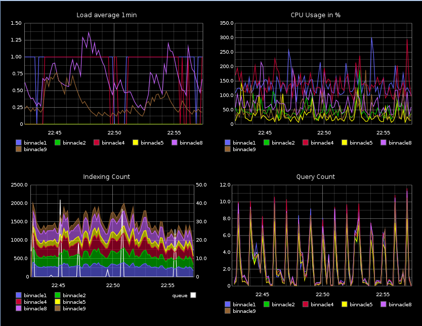

Created by Jeff Schroeder / @SEJeff / github: SEJeff
(no unicorns were harmed in the creation of this presentation)
A composer for adhoc graphing, a dashboard for ops, and a REST API for developers/external tools.
Used for creating and manipulating new graphs on the fly
A built-in dashboard creator to add graphs to a big monitoring screen
Mailgun monitors their elasticsearch infrastructure with graphite. 
The REST API allows other external tools to use graphite data for creating the pretty
The caching, relay, and storage layer. Carbon is what clients actually send metrics to.
Carbon uses storage schemas
[apache_busyWorkers]
pattern = ^servers\.www.*\.workers\.busyWorkers$
retentions = 5m:1d,15m:7d,1h:30d,6h:1y
Graphite docs on sending metrics
#!/bin/bash
# Basically the best carbon client in the world
GRAPHITE_SERVER=${GRAPHITE_SERVER:-localhost}
GRAPHITE_PORT=${GRAPHITE_PORT:-2003}
echo "foo.bar.baz $(($RANDOM % 500)).$(($RANDOM % 5)) $(date +%s)" | \
nc "$GRAPHITE_SERVER" "$GRAPHITE_PORT"
metric.schema.name value_as_float unix_epoch_time
The carbon aggregator buffers metrics and performs down-sampling operations. Examples could be things like summing requests per hour and only firing the counter to the cache once per hour. Many people use one of the various forms of statsd to do this as well.
TL;DNR: Use statsd, it is awesome!
Regex-based rules or consistent-hashing.
Example relay-rules.conf
[db_servers]
pattern = ^collectd\..*db.*
servers = 10.1.2.3, 10.1.2.4:2004, myserver.example.com
Whisper is a python library created essentially to be a better RRD.
The internets agrees!
In RRD speak, data retention policies are configured via a RRA using reverse polish notation.
Sorry, not the yummy hot dogs us Chicagoans love!
Taken from stack overflow, so it has to be right
RRA:AVERAGE:0.5:1:288 \ # 1 day of 5 minute avg
RRA:AVERAGE:0.5:3:672 \ # 1 week of 15 minute avg
RRA:AVERAGE:0.5:12:744 \ # 1 month of 1 hour avg
RRA:AVERAGE:0.5:72:1480 # 1 year of 6 hour avg
Enough time blabbing, time for 12 great graphite tools
Graphene is built for tv static dashboards
Giraffe is great viewing pre-generated realtime dashboards
Written by square, cubism, helps build compact and realtime dashboards.
If you love jQuery (I do!), graphite.js, makes it pretty trivial to pull graphs into your existing application
For those who don't prefer a roll your own approach
Descartes is a full featured graphing dashboard with builtin collaboration and native "composer" functionality.
Gdash uses a simple DSL for generating graphs and is easy to get going
Tasseo is an alerting dashboard that can change graph colors based on thresholds.
Tattle is a popular alerting dashboard
Orion full featured dashboard application with granular access control over metrics
Graph Explorer replacement for the graphite composer with tagging and other cleverness
Graphsky is more or less a ganglia replacement dashboard built ontop of graphite
Dusk a realtime hotspot dashboard